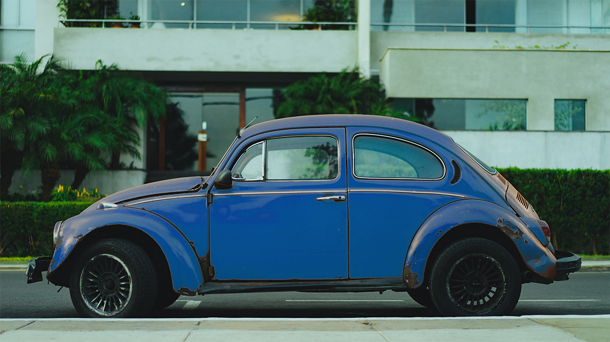
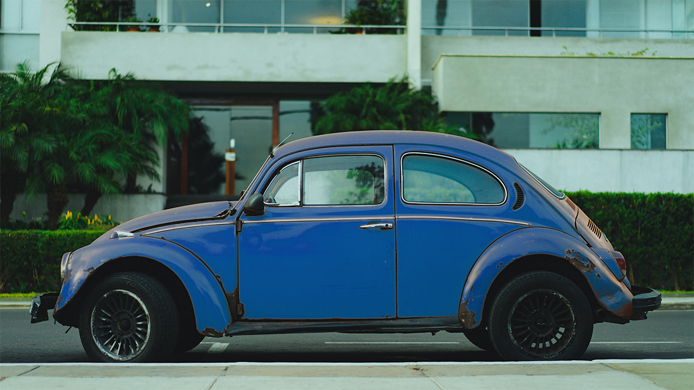

山本 和
Nodoka Yamamoto
愛媛県今治市在住・3児の母
座右の銘
「選択は自分で正解にする」
すきなこと
歌うこと・寝ること・猫を吸うこと
きらいなこと
早起き・運動・家事全般


1988.8.30
愛媛県今治市で誕生
とにかくうるさい幼少期
親曰く「起きてる間はずっとしゃべるか歌うかしてる子どもだった」
物心ついたときから、なぜか自分は『かんごふさん』になるものだと思っていた。
陰キャラ炸裂中学生期
インターネットが普及し始め、ネットゲームの世界にどっぷりハマる。
「なんとなくできそう」という思いつきで、独学でサイト制作を始める。
Windowsのメモ帳で毎日ちまちまコードを書いていた。
尖りに尖った高校生期
進学校だったにもかかわらず勉強はまったくせずに部活ばかりしており、学年で下から3番目の成績をマークするなどしていた（下位の2人は試験日欠席だったことがのちに発覚）
「出身校は誰にも言うな」と言われながら高校卒業。
大学生というよりバンドマン期
ドラマ『オレンジデイズ』に憧れて大学へ進学。芝生で寝ている子もバイオリンを弾いてる子もおらず（そもそも芝生がなかった）衝撃を受ける。
勉強そっちのけでバンド活動ばかりしており、相変わらずWindowsメモ帳でバンドのHPを制作していた。
「卒業生を名乗るな」と言われながら大学卒業。
白衣の天使（人生の荒波）期
就職後は看護師として意外にも真面目に、楽しく働く。
患者さんからは新人時代からベテランに間違われていた（老けていた）
結婚し、2016長男出産するも、音の速さで離婚。
地元に戻った直後、同僚に交際0日でプロポーズされ、光の速さで再婚。
ワーカホリック教員期
「看護が好きな看護師を育てたい」という熱い思いを胸に看護学校の教員に転職。
学生ひとりひとりの長所を見つけて伸ばす大切さを知る。
寝食を忘れて仕事に没頭。
働き方改革期
2020次男、2023長女出産
子どもたちの発達障害が発覚するなどし、育児と仕事のバランスがとれず看護学校を退職。
働き方を模索するうち、若かりし頃に独学でWEB制作をしていた記憶がよみがえる。
デザインとコーディングを一から学び直し、デザイナーとして活動を始める。
2024.03.05
DecoRa design works開業

design
- Adobe Photoshop
- Adobe Illustrator
- Figma
- Canva
cording
- HTML
- CSS
- JavaScript
- WiX
license
- 看護師
- 保健師
- 看護専任教員
- 弓道初段

 
